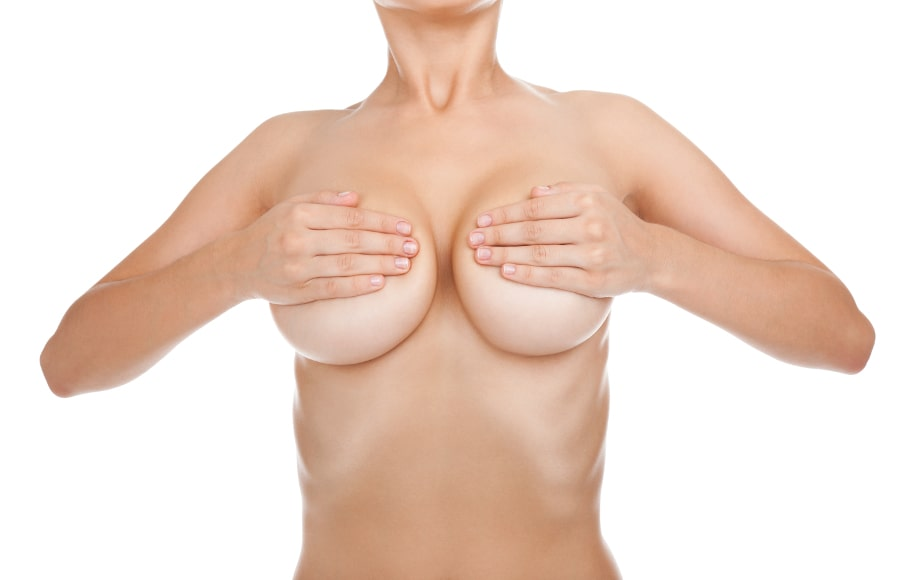
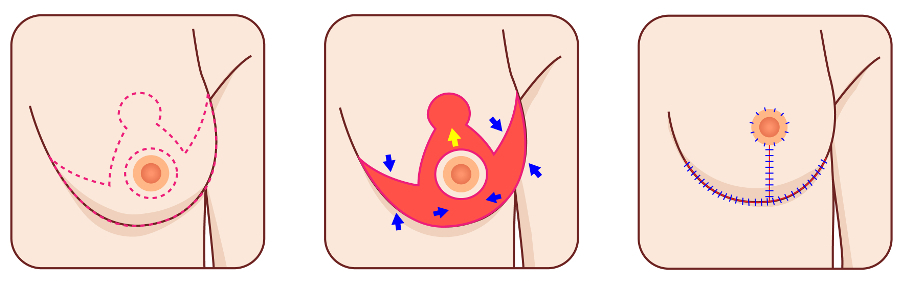
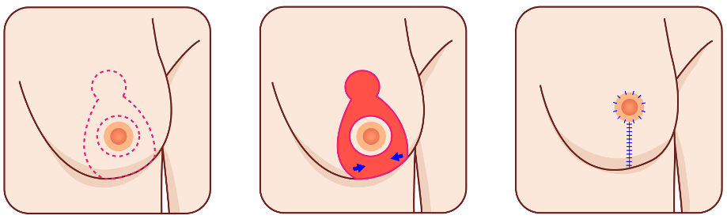

Reducción Mamaria
Las mujeres con senos grandes y sobre todo muy grandes, que constituyen verdaderas gigantomastias, pueden sufrir molestias como dolor de espalda, mala postura o no estar conformes con su apariencia física. Muchas veces la chicas jóvenes se sienten cohibidas e incomodas cuando sus senos son muy grandes.
Qué es la cirugía de reducción mamaria
La cirugía de reducción mamaria busca quitar grasa y el tejido glandular del seno con el objetivo de lograr senos más pequeños pero armónicos, en relación a la talla y las proporciones de la paciente, buscando senos redondeados y en posición adecuada.
Esto lleva también a un alivio en el peso de los senos, a una mejor postura, desaparece completamente la molestia en la espalda y la paciente se siente mucho más cómoda y estéticamente estilizada.
Se debe tener presente que, en caso que la paciente operada quede embarazada y sobre todo luego de la lactancia, las mamas pueden sufrir alteraciones de la forma y tamaño que deterioran el resultado de la cirugía realizada previamente.
También es importante que las pacientes tengan expectativas realistas para estar satisfechas con los resultados de su cirugía.
Técnicas de reducción mamaria
Cada procedimiento y diseño debe ser personalizado para cada paciente según el tamaño, la forma de las mamas y el grado de descenso o ptosis.
Siempre se intenta realizar el mínimo posible de incisiones y por lo tanto de cicatrices. En general comprenden una incisión circular u ovoidea, peri-areolar en la posición correcta de la areola y el pezón y luego un diseño que puede llevar a una cicatriz vertical debajo de la areola sola o asociada a una cicatriz horizontal en el surco submamario, la cual queda oculta. Nuestra filosofía es realizar la menor cantidad de cicatrices posibles, lo mas ocultas posibles y ser lo más perfeccionistas en cuanto a la calidad de la sutura.
Características del procedimiento
Nosotros realizamos esta cirugía en sala de cirugía, bajo anestesia general para mejor confort de la paciente y luego de dormida complementamos con anestesia local para disminuir las molestias postoperatorias.
Esta cirugía la realizamos en un block quirúrgico, en el contexto de un centro con todos los elementos de bioseguridad.
En general intentamos realizar suturas con hilos reabsorbibles y suturas intradérmicas con lo cual quedan mejores cicatrices y no es necesario retirar puntos posteriormente.
Postoperatorio y recuperación
Durante el postoperatorio de reducción mamaria, las pacientes pueden presentar algo de dolor, hinchazón y moretones. El dolor y el edema disminuyen luego del 2do. o 3er. dia. Los moretones tienden a desaparecer luego de la 3ra. a 4ta. semana. Se indica reposo durante aproximadamente dos semanas y el ejercicio físico se recomienda comenzar luego de la 4ta. a la 6ta. semana.
Los resultados del procedimiento de reducción mamaria son inmediatos pero la mama termina de normalizarse luego de los primeros meses. Las cicatrices se atenuarán notablemente con el tiempo.